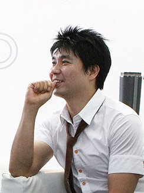
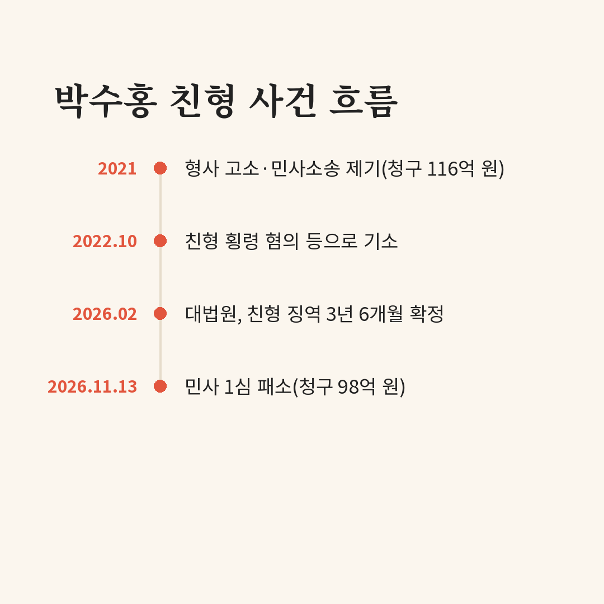

친형은 회사 돈 횡령으로 징역형이 확정됐는데, 박수홍이 친형 부부를 상대로 낸 98억 원 손해배상 소송은 1심에서 졌어요. 결과만 보면 앞뒤가 안 맞는 것 같지만, 법원이 본 쟁점은 '돈을 빼돌렸나'가 아니라 '누가 누구에게 배상을 청구할 수 있나'였어요. 판결 내용을 쉬운 말로 정리했어요.
📷 사진 1 자리
▲ 사진: LG전자 / CC BY 2.0 / 위키미디어 공용
법원이 내린 결론
서울서부지법 민사합의12부는 11월 13일 1심 판결에서 친형에 대한 청구는 기각하고, 형수에 대한 소는 각하했어요.
두 말은 비슷해 보여도 뜻이 달라요. 기각은 법원이 내용을 따져 본 뒤 청구를 받아들이지 않았다는 뜻이고, 각하는 소송 요건이 맞지 않아 내용을 따지지 않고 끝냈다는 뜻이에요.
▶ 영상 1 자리
형은 유죄인데 왜 졌나
첫째는 돈이 오간 구조예요. 박수홍 측은 2020년 7월 수익을 7 대 3으로 나누기로 합의하기 전에도 같은 비율의 약정이 있었다며, 법인 순자산과 기획사 주식의 70%를 달라고 했어요. 재판부는 그 전까지는 두 사람 사이에 직접 계약이 있었다기보다, 법인이 연예 활동을 관리하고 수익도 법인을 거쳐 지급한 구조로 봤어요.
둘째는 피해를 입은 쪽이 누구냐예요. 재판부는 친형 부부가 회사 돈을 횡령해 손해를 끼친 점은 비난받아 마땅하다고 했어요. 다만 수익이 회사로 들어가는 구조였던 이상, 그 손해를 박수홍 개인이 친형에게 직접 물을 수는 없다고 판단했어요.
개인 돈을 빼돌렸다는 부분도 인정되지 않았어요. 형사재판에서 이 혐의는 이미 무죄로 판단됐고, 재판부는 이 점을 함께 고려했어요.
5년 다툼, 한눈에 보는 흐름
2021년 박수홍 측은 친형 부부를 횡령 혐의로 고소하면서 민사소송도 함께 냈어요. 처음 청구액은 116억 원이었는데 재판 과정에서 98억 원으로 줄었어요.
📷 사진 2 자리
친형은 2011년부터 2021년까지 박수홍의 매니지먼트를 맡으며 회사 자금을 개인 용도로 쓴 혐의 등으로 2022년 10월 재판에 넘겨졌어요. 대법원은 올해 2월 친형에게 징역 3년 6개월, 형수에게 징역 1년에 집행유예 2년을 확정했어요. 회사 자금 횡령은 유죄, 박수홍 개인 자금 횡령은 무죄였어요.
앞으로는
이번 판결은 1심이라 아직 확정이 아니에요. 판결에 불복하면 항소할 수 있어요. 판결 뒤 양측의 공식 입장이나 항소 여부는 이 글을 쓰는 시점까지 보도되지 않았어요.
▶ 영상 2 자리
판결 내용을 따라가 보니, '형이 횡령했다'와 '동생이 형에게 직접 돈을 돌려받을 수 있다'가 법에서는 서로 다른 질문이라는 게 가장 크게 다가왔어요. 회사를 통해 일하는 연예인이 많다는 걸 생각하면, 수익이 개인과 법인 중 어디로 들어가는지가 이렇게까지 중요할 수 있다는 걸 보여 준 판결 같아요.
박수홍은 친형 부부를 상대로 낸 98억 원 손해배상 소송 1심에서 패소했고, 재판부는 회사 돈 피해를 개인이 직접 청구하기 어렵다는 점을 이유로 들었어요.

